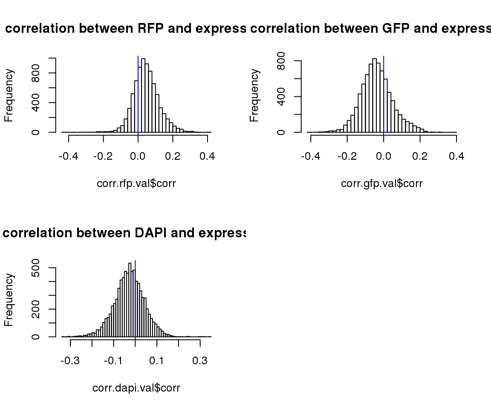
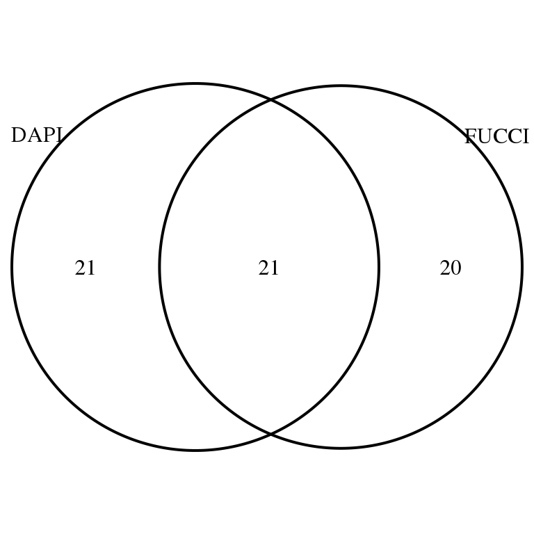

Select genes indicative of cell cycle state
Joyce Hsiao
Last updated: 2018-03-07
Code version: a7c550c
Overview/Results
Assume that cell cycle state is a latent variable. Then here we are interested in evaluating whether FUCCI intensities correlates or predicts cell cycle state, asssuming that DAPI can be employed as a proxy for cell cycle state.
In addition, I performed some analysis on genes that are highly correlated with both DAPI and FUCCI intensities to see 1) if cell cycle ordering based on cellcycleR correlated with these genes, 2) if cell cycle ordering based on least square fit correlated with these genes, 3) if cell cycle ordering based on these genes correlate with the other two ordering at all.
Data and packages
Packages
library(CorShrink)
library(mygene)Load data
df <- readRDS(file="../data/eset-filtered.rds")
pdata <- pData(df)
fdata <- fData(df)
# select endogeneous genes
counts <- exprs(df)[grep("ENSG", rownames(df)), ]
# import corrected intensities
pdata.adj <- readRDS("../output/images-normalize-anova.Rmd/pdata.adj.rds")
log2cpm <- readRDS("../output/seqdata-batch-correction.Rmd/log2cpm.rds")
log2cpm.adjust <- readRDS("../output/seqdata-batch-correction.Rmd/log2cpm.adjust.rds")
log2cpm <- log2cpm[grep("ENSG", rownames(log2cpm)),
colnames(log2cpm) %in% rownames(pdata.adj)]
log2cpm.adjust <- log2cpm.adjust[grep("ENSG", rownames(log2cpm)),
colnames(log2cpm.adjust) %in% rownames(pdata.adj)]
all.equal(rownames(pdata.adj), colnames(log2cpm))[1] TRUEmacosko <- readRDS(file = "../data/cellcycle-genes-previous-studies/rds/macosko-2015.rds")
pdata.adj.filt <- readRDS(file = "../output/images-circle-ordering.Rmd/pdata.adj.filt.rds")
proj.res <- readRDS(file = "../output/images-circle-ordering.Rmd/proj.res.rds")Correlations
compute correlation between adjusted intensities and log2 expression data.
corr.rfp <- do.call(rbind, lapply(1:nrow(log2cpm), function(i) {
vec <- cbind(pdata.adj$rfp.median.log10sum.adjust.ash,
log2cpm[i,])
filt <- counts[i,] > 1
nsamp <- sum(filt)
if (nsamp > 100) {
# cnt <- counts[i,filt]
vec <- vec[filt,]
corr <- cor(vec[,1], vec[,2])
nsam <- nrow(vec)
data.frame(corr=corr, nsam=nsam)
} else {
data.frame(corr=NA, nsam=nrow(vec))
}
}) )
corr.gfp <- do.call(rbind, lapply(1:nrow(log2cpm), function(i) {
vec <- cbind(pdata.adj$gfp.median.log10sum.adjust.ash,
log2cpm[i,])
filt <- counts[i,] > 1
nsamp <- sum(filt)
if (nsamp > 100) {
vec <- vec[filt,]
corr <- cor(vec[,1], vec[,2])
nsam <- nrow(vec)
data.frame(corr=corr, nsam=nsam)
} else {
data.frame(corr=NA, nsam=nrow(vec))
}
}) )
corr.dapi <- do.call(rbind, lapply(1:nrow(log2cpm), function(i) {
vec <- cbind(pdata.adj$dapi.median.log10sum.adjust.ash,
log2cpm[i,])
filt <- counts[i,] > 1
nsamp <- sum(filt)
if (nsamp > 100) {
vec <- vec[filt,]
corr <- cor(vec[,1], vec[,2])
nsam <- nrow(vec)
data.frame(corr=corr, nsam=nsam)
} else {
data.frame(corr=NA, nsam=nrow(vec))
}
}) )
rownames(corr.rfp) <- rownames(log2cpm)
rownames(corr.gfp) <- rownames(log2cpm)
rownames(corr.dapi) <- rownames(log2cpm)
corr.rfp.val <- corr.rfp[!is.na(corr.rfp$corr),]
corr.gfp.val <- corr.gfp[!is.na(corr.gfp$corr),]
corr.dapi.val <- corr.dapi[!is.na(corr.dapi$corr),]
par(mfrow=c(2,2))
hist(corr.rfp.val$corr, main = "correlation between RFP and expression",nclass=50)
abline(v=0, col = "blue")
hist(corr.gfp.val$corr, main = "correlation between GFP and expression",nclass=50)
abline(v=0, col = "blue")
hist(corr.dapi.val$corr, main = "correlation between DAPI and expression",nclass=50)
abline(v=0, col = "blue")
Apply CorShrink.
corr.rfp.shrink <- CorShrinkVector(corr.rfp.val$corr, nsamp_vec = corr.rfp.val$nsam,
optmethod = "mixEM", report_model = TRUE)
names(corr.rfp.shrink$estimate) <- rownames(corr.rfp.val)
corr.gfp.shrink <- CorShrinkVector(corr.gfp.val$corr, nsamp_vec = corr.gfp.val$nsam,
optmethod = "mixEM", report_model = TRUE)
names(corr.gfp.shrink$estimate) <- rownames(corr.gfp.val)
corr.dapi.shrink <- CorShrinkVector(corr.dapi.val$corr, nsamp_vec = corr.dapi.val$nsam,
optmethod = "mixEM", report_model = TRUE)
names(corr.dapi.shrink$estimate) <- rownames(corr.dapi.val)
par(mfcol=c(2,2))
plot(corr.rfp.val$corr, corr.rfp.shrink$estimate,
col=1+as.numeric(corr.rfp.shrink$model$result$svalue < .01),
xlim=c(-.5,.5), ylim=c(-.5,.5), pch=16, cex=.8,
xlab = "Correlation", ylab = "Shrunken estimate",
main = "RFP")
abline(0,1)
plot(corr.gfp.val$corr, corr.gfp.shrink$estimate,
col=1+as.numeric(corr.gfp.shrink$model$result$svalue < .01),
xlim=c(-.5,.5), ylim=c(-.5,.5), pch=16, cex=.8,
xlab = "Correlation", ylab = "Shrunken estimate",
main = "GFP")
abline(0,1)
plot(corr.dapi.val$corr, corr.dapi.shrink$estimate,
col=1+as.numeric(corr.dapi.shrink$model$result$svalue < .01),
xlim=c(-.5,.5), ylim=c(-.5,.5), pch=16, cex=.8,
xlab = "Correlation", ylab = "Shrunken estimate",
main = "DAPI")
abline(0,1)
title("s-value < .01", outer = TRUE, line = -1)DAPI vs FUCCI
macosko <- readRDS("../data/cellcycle-genes-previous-studies/rds/macosko-2015.rds")
corr.all <- data.frame(genes = rownames(corr.dapi.val),
corr.dapi = corr.dapi.shrink$model$result$PosteriorMean,
corr.gfp = corr.gfp.shrink$model$result$PosteriorMean,
corr.rfp = corr.rfp.shrink$model$result$PosteriorMean,
sval.dapi = corr.dapi.shrink$model$result$svalue,
sval.gfp = corr.gfp.shrink$model$result$svalue,
sval.rfp = corr.rfp.shrink$model$result$svalue)
rownames(corr.all) <- rownames(corr.dapi.val)
corr.all.macosko <- corr.all[which(rownames(corr.all) %in% macosko$ensembl),]par(mfrow=c(2,2))
hist(corr.all$corr.dapi[corr.all$sval.dapi < .01], nclass = 50,
main = "DAPI vs. expression (sval < .01)",
xlab = "Pearson correlation")
hist(corr.all$corr.gfp[corr.all$sval.gfp < .01], nclass = 50,
main = "GFP vs. expression (sval < .01)",
xlab = "Pearson correlation")
hist(corr.all$corr.rfp[corr.all$sval.rfp < .01], nclass = 50,
main = "RFP vs. expression (sval < .01)",
xlab = "Pearson correlation")Of the 469 genes previously annotated as cycle gene, we see that there’s about 50% of the genes significantly associated with DAPI that are also associated with FUCCI intenssities (to both GFP and RFP), and vice versa.
library(VennDiagram)
library(grid)
grid.draw(venn.diagram(
list(DAPI = rownames(corr.all.macosko)[corr.all.macosko$sval.dapi < .01],
FUCCI = rownames(corr.all.macosko)[corr.all.macosko$sval.gfp < .01 & corr.all.macosko$sval.rfp < .01]),
filename = NULL))
Of genes that are signficantly correlated with both DAPI and Fucci, see how many the expression can be predicted by FUCCI above and beyond DAPI and vice versa.
both.genes <- rownames(corr.all.macosko)[corr.all.macosko$sval.dapi < .01 & corr.all.macosko$sval.gfp < .01 & corr.all.macosko$sval.rfp < .01]
fucci.above.dapi <- do.call(c, lapply(1:length(both.genes), function(i) {
nm <- both.genes[i]
fit.0 <- lm(log2cpm[which(rownames(log2cpm) %in% nm), ] ~ factor(pdata.adj$chip_id) + pdata.adj$dapi.median.log10sum.adjust.ash - 1)
fit.1 <- lm(log2cpm[which(rownames(log2cpm) %in% nm), ] ~ factor(pdata.adj$chip_id) + pdata.adj$dapi.median.log10sum.adjust.ash + pdata.adj$gfp.median.log10sum.adjust.ash + pdata.adj$gfp.median.log10sum.adjust.ash - 1)
res <- anova(fit.0, fit.1)
res$`Pr(>F)`[2]
}) )
names(fucci.above.dapi) <- both.genes
dapi.above.fucci <- do.call(c, lapply(1:length(both.genes), function(i) {
nm <- both.genes[i]
fit.0 <- lm(log2cpm[which(rownames(log2cpm) %in% nm), ] ~ factor(pdata.adj$chip_id) + pdata.adj$gfp.median.log10sum.adjust.ash + pdata.adj$gfp.median.log10sum.adjust.ash - 1)
fit.1 <- lm(log2cpm[which(rownames(log2cpm) %in% nm), ] ~ factor(pdata.adj$chip_id) + pdata.adj$dapi.median.log10sum.adjust.ash + pdata.adj$gfp.median.log10sum.adjust.ash + pdata.adj$gfp.median.log10sum.adjust.ash - 1)
res <- anova(fit.0, fit.1)
res$`Pr(>F)`[2]
}) )
names(dapi.above.fucci) <- both.genesOf the 21 genes correlated with both DAPI and FUCCI, 6 of them the expression is predicted by FUCCI above and beyond DAPI, while 10 of them the expression is predicted by DAPI above and beyond FUCCI. In addition, 3 of them FUCCI and DAPI and equally important in predicting expression profile.
sum(fucci.above.dapi < .01)[1] 8sum(dapi.above.fucci < .01)[1] 12Of the 7844 genes that we computed correlation between expression and intensities, we see that there’s about 50% of the genes significantly associated with DAPI that are also associated with FUCCI intenssities (to both GFP and RFP), and vice versa.
grid.draw(venn.diagram(
list(DAPI = rownames(corr.all)[corr.all$sval.dapi < .01],
FUCCI = rownames(corr.all)[corr.all$sval.gfp < .01 & corr.all$sval.rfp < .01]),
filename = NULL))Of genes that are signficantly correlated with both DAPI and Fucci, see how many the expression can be predicted by FUCCI above and beyond DAPI and vice versa.
both.genes <- rownames(corr.all)[corr.all$sval.dapi < .01 & corr.all$sval.gfp < .01 & corr.all$sval.rfp < .01]
fucci.above.dapi <- do.call(c, lapply(1:length(both.genes), function(i) {
nm <- both.genes[i]
fit.0 <- lm(log2cpm[which(rownames(log2cpm) %in% nm), ] ~ factor(pdata.adj$chip_id) + pdata.adj$dapi.median.log10sum.adjust.ash - 1)
fit.1 <- lm(log2cpm[which(rownames(log2cpm) %in% nm), ] ~ factor(pdata.adj$chip_id) + pdata.adj$dapi.median.log10sum.adjust.ash + pdata.adj$gfp.median.log10sum.adjust.ash + pdata.adj$gfp.median.log10sum.adjust.ash - 1)
res <- anova(fit.0, fit.1)
res$`Pr(>F)`[2]
}) )
names(fucci.above.dapi) <- both.genes
dapi.above.fucci <- do.call(c, lapply(1:length(both.genes), function(i) {
nm <- both.genes[i]
fit.0 <- lm(log2cpm[which(rownames(log2cpm) %in% nm), ] ~ factor(pdata.adj$chip_id) + pdata.adj$gfp.median.log10sum.adjust.ash + pdata.adj$gfp.median.log10sum.adjust.ash - 1)
fit.1 <- lm(log2cpm[which(rownames(log2cpm) %in% nm), ] ~ factor(pdata.adj$chip_id) + pdata.adj$dapi.median.log10sum.adjust.ash + pdata.adj$gfp.median.log10sum.adjust.ash + pdata.adj$gfp.median.log10sum.adjust.ash - 1)
res <- anova(fit.0, fit.1)
res$`Pr(>F)`[2]
}) )
names(dapi.above.fucci) <- both.genesOf the 33 genes correlated with both DAPI and FUCCI, 10 of them the expression is predicted by FUCCI above and beyond DAPI, while 13 of them the expression is predicted by DAPI above and beyond FUCCI. In addition, 3 of them FUCCI and DAPI and equally important in predicting expression profile.
sum(fucci.above.dapi < .01)[1] 15sum(dapi.above.fucci < .01)[1] 13sum(fucci.above.dapi < .01 & dapi.above.fucci < .01)[1] 4Save output
save(corr.all, file = "../output/images-seq-correlation.Rmd/corr.all.rds")
save(corr.all.macosko, file = "../output/images-seq-correlation.Rmd/corr.all.macosko.rds")Genes and projected cell times
There are three clusters in projected cell times (lowest BIC). I then fit spherical regression to find genes that are significant predictors of projected cell times fo each cluster. I only found one signfican genes, which is CDK1.
Note: It’s important to consider the assumption that sin(theta) and cos(theta) are uncorrelated. May be unrealistic.
log2cpm.sig.macosko <- log2cpm[which(rownames(log2cpm) %in% rownames(corr.all.macosko)[corr.all.macosko$sval.dapi < .01 & corr.all.macosko$sval.rfp < .01 & corr.all.macosko$sval.gfp < .01]), ]
log2cpm.sig.macosko.filt <- log2cpm.sig.macosko[,match(rownames(pdata.adj.filt), colnames(log2cpm.sig.macosko)) ]
Theta <- do.call(c, lapply(proj.res, function(x) as.numeric(x[[1]]$rads)))
names(Theta) <- do.call(c, lapply(proj.res, function(x) rownames(x[[1]])))
hist(Theta, nclass = 50)Predict cell times by annotated cell cycle gens that are correlated with both DAPI and FUCCI. Only two genes of these 21 show significant association with the projected cell time.
library(Rfast)
x <- data.frame(chip_id = pdata.adj.filt$chip_id,
t(log2cpm.sig.macosko.filt))
fit <- spml.reg(y=Theta, x=x, seb = TRUE)
round(2*pnorm(fit$be/fit$seb, lower.tail = FALSE),4) Cosinus of y Sinus of y
(Intercept) 2.0000 0.4200
chip_idNA18855 1.5713 0.5676
chip_idNA18870 0.5448 0.3333
chip_idNA19098 1.8928 0.5415
chip_idNA19101 1.2980 0.5986
chip_idNA19160 0.2619 0.0672
ENSG00000073111 0.5325 0.5397
ENSG00000075131 0.5562 0.1162
ENSG00000087586 0.3181 0.8753
ENSG00000092853 1.3196 0.0115
ENSG00000105173 0.6469 0.1668
ENSG00000108424 0.3158 0.8546
ENSG00000111665 0.6555 1.4160
ENSG00000112312 0.0000 0.0001
ENSG00000113810 1.2961 1.1571
ENSG00000117724 0.6950 1.4492
ENSG00000123485 0.7072 1.1348
ENSG00000123975 1.9968 1.9829
ENSG00000131747 0.0361 1.4206
ENSG00000132646 0.1135 0.8299
ENSG00000137807 0.2208 0.7194
ENSG00000144354 1.4998 0.0014
ENSG00000154473 0.7946 1.8048
ENSG00000170312 0.0000 1.9987
ENSG00000175063 0.0114 2.0000
ENSG00000178999 1.8746 1.1140
ENSG00000182481 0.9368 0.1293Could there be multiple modes in the distribution and hence the terrible prediction?
library(movMF)
x <- cbind(sin(Theta), cos(Theta))
fit.2 <- movMF(x, k = 2, nruns = 100)
fit.3 <- movMF(x, k = 3, nruns = 100)
fit.4 <- movMF(x, k = 4, nruns = 100)
sapply(list(fit.2, fit.3, fit.4), BIC)[1] -45.86082 -67.51785 -48.15189For each cluster, fit spml.
library(ashr)
fit.3.predict <- predict(fit.3)
par(mfrow =c(2,2))
hist(Theta[fit.3.predict == 1], xlim = c(0,2*pi), main = "Cluster 1")
hist(Theta[fit.3.predict == 2], xlim = c(0,2*pi), main = "Cluster 2")
hist(Theta[fit.3.predict == 3], xlim = c(0,2*pi), main = "Cluster 3")
x <- data.frame(chip_id = pdata.adj.filt$chip_id,
t(log2cpm.sig.macosko.filt))
fit.clust1 <- spml.reg(y=Theta[which(fit.3.predict == 1)],
x=x[which(fit.3.predict == 1), ], seb = TRUE)
fit.clust1.sval <- cbind(ash(fit.clust1$be[,1],fit.clust1$seb[,1])$result$svalue,
ash(fit.clust1$be[,2],fit.clust1$seb[,2])$result$svalue)
fit.clust2 <- spml.reg(y=Theta[which(fit.3.predict == 2)],
x=x[which(fit.3.predict == 2), ], seb = TRUE)
fit.clust2.sval <- cbind(ash(fit.clust2$be[,1],fit.clust2$seb[,1])$result$svalue,
ash(fit.clust2$be[,2],fit.clust2$seb[,2])$result$svalue)
fit.clust3 <- spml.reg(y=Theta[which(fit.3.predict == 3)],
x=x[which(fit.3.predict == 3), ], seb = TRUE)
fit.clust3.sval <- cbind(ash(fit.clust3$be[,1],fit.clust3$seb[,1])$result$svalue,
ash(fit.clust3$be[,2],fit.clust3$seb[,2])$result$svalue)
cbind(round(fit.clust1.sval,4),
round(fit.clust2.sval,4),
round(fit.clust3.sval,4)) [,1] [,2] [,3] [,4] [,5] [,6]
[1,] 0.4453 1 0.9160 1 1 1
[2,] 0.1806 1 0.8087 1 1 1
[3,] 0.0922 1 0.9451 1 1 1
[4,] 0.5887 1 0.8973 1 1 1
[5,] 0.6483 1 0.8677 1 1 1
[6,] 0.0036 1 0.9551 1 1 1
[7,] 0.8328 1 0.9739 1 1 1
[8,] 0.8200 1 0.9724 1 1 1
[9,] 0.8052 1 0.9783 1 1 1
[10,] 0.7277 1 0.9801 1 1 1
[11,] 0.7421 1 0.9808 1 1 1
[12,] 0.6722 1 0.9708 1 1 1
[13,] 0.8267 1 0.9792 1 1 1
[14,] 0.5504 1 0.6329 1 1 1
[15,] 0.7553 1 0.9763 1 1 1
[16,] 0.5043 1 0.9506 1 1 1
[17,] 0.7969 1 0.9815 1 1 1
[18,] 0.7117 1 0.9670 1 1 1
[19,] 0.3668 1 0.9691 1 1 1
[20,] 0.6203 1 0.9647 1 1 1
[21,] 0.7780 1 0.9773 1 1 1
[22,] 0.8129 1 0.9822 1 1 1
[23,] 0.7671 1 0.9380 1 1 1
[24,] 0.0057 1 0.9588 1 1 1
[25,] 0.7879 1 0.9751 1 1 1
[26,] 0.2623 1 0.9620 1 1 1
[27,] 0.6933 1 0.9285 1 1 1
None is signifcantly associated with sin(theta). But cdk1 for the third cluster (cyclin dependent kinase 1) is significantly associated with all three clusters (sval < .01).
rownames(fit.clust3$be)[24][1] "ENSG00000170312"Check how different the effect sizes are
round(cbind(fit.clust1$be, fit.clust2$be, fit.clust3$be),4) Cosinus of y Sinus of y Cosinus of y Sinus of y
(Intercept) -1.5676 4.3411 -4.8615 -4.4178
chip_idNA18855 0.6413 0.1966 0.4240 -0.2489
chip_idNA18870 0.6881 0.4371 0.1497 -0.0607
chip_idNA19098 0.2255 -0.1399 0.3915 -0.0490
chip_idNA19101 0.1019 0.4251 0.4253 0.0995
chip_idNA19160 1.1808 0.8396 -0.0916 0.2093
ENSG00000073111 -0.0077 0.0914 0.0518 -0.0483
ENSG00000075131 0.0177 0.0208 -0.0573 0.0754
ENSG00000087586 0.0238 0.0339 0.0354 0.0755
ENSG00000092853 0.0556 -0.0477 0.0221 0.0372
ENSG00000105173 0.0533 0.0718 0.0079 0.0304
ENSG00000108424 0.0953 -0.1604 0.0134 -0.0868
ENSG00000111665 0.0133 -0.0285 -0.0268 -0.0144
ENSG00000112312 0.1567 -0.1142 0.5024 0.3102
ENSG00000113810 -0.0404 -0.0078 -0.0134 0.0564
ENSG00000117724 -0.1493 -0.0679 0.1533 -0.1182
ENSG00000123485 0.0285 0.0179 0.0090 -0.0611
ENSG00000123975 -0.0652 -0.1714 -0.0201 -0.1005
ENSG00000131747 -0.1456 0.1414 -0.0425 0.1823
ENSG00000132646 0.1124 0.0830 0.0723 0.1930
ENSG00000137807 0.0323 -0.1277 -0.0487 0.0095
ENSG00000144354 -0.0176 0.0693 -0.0004 0.0373
ENSG00000154473 0.0278 -0.0268 -0.1579 -0.0713
ENSG00000170312 0.2257 -0.0436 0.1097 -0.0764
ENSG00000175063 0.0076 -0.0351 0.0110 -0.0225
ENSG00000178999 -0.1642 0.1270 -0.0925 -0.0722
ENSG00000182481 -0.0671 -0.0982 0.2185 0.0836
Cosinus of y Sinus of y
(Intercept) -4.4571 -0.0537
chip_idNA18855 0.2953 -0.2607
chip_idNA18870 -0.1854 -0.1613
chip_idNA19098 -0.1297 -0.1262
chip_idNA19101 0.1408 -0.2465
chip_idNA19160 -0.3938 -0.9976
ENSG00000073111 0.0027 -0.0074
ENSG00000075131 -0.0759 0.0417
ENSG00000087586 0.0282 0.0337
ENSG00000092853 -0.0407 0.1206
ENSG00000105173 -0.0839 -0.0109
ENSG00000108424 0.0800 -0.1972
ENSG00000111665 -0.0805 -0.0779
ENSG00000112312 -0.2047 0.2599
ENSG00000113810 -0.1616 -0.0427
ENSG00000117724 0.4729 0.1592
ENSG00000123485 0.0248 0.0183
ENSG00000123975 0.0581 -0.4684
ENSG00000131747 -0.0802 0.0248
ENSG00000132646 0.0541 -0.2025
ENSG00000137807 -0.0405 0.0076
ENSG00000144354 -0.0567 0.0813
ENSG00000154473 0.2675 0.1760
ENSG00000170312 0.3926 -0.1041
ENSG00000175063 0.0389 -0.1385
ENSG00000178999 -0.0682 -0.0122
ENSG00000182481 -0.2941 0.2308Correlation between RFP and GFP.
plot(x=pdata.adj.filt$gfp.median.log10sum.adjust,
y=pdata.adj.filt$rfp.median.log10sum.adjust,
xlab = "GFP", ylab = "RFP")Session information
R version 3.4.1 (2017-06-30)
Platform: x86_64-redhat-linux-gnu (64-bit)
Running under: Scientific Linux 7.2 (Nitrogen)
Matrix products: default
BLAS/LAPACK: /usr/lib64/R/lib/libRblas.so
locale:
[1] LC_CTYPE=en_US.UTF-8 LC_NUMERIC=C
[3] LC_TIME=en_US.UTF-8 LC_COLLATE=en_US.UTF-8
[5] LC_MONETARY=en_US.UTF-8 LC_MESSAGES=en_US.UTF-8
[7] LC_PAPER=en_US.UTF-8 LC_NAME=C
[9] LC_ADDRESS=C LC_TELEPHONE=C
[11] LC_MEASUREMENT=en_US.UTF-8 LC_IDENTIFICATION=C
attached base packages:
[1] grid stats4 parallel stats graphics grDevices utils
[8] datasets methods base
other attached packages:
[1] ashr_2.2-4 movMF_0.2-2 Rfast_1.8.6
[4] RcppZiggurat_0.1.4 Rcpp_0.12.15 VennDiagram_1.6.19
[7] futile.logger_1.4.3 mygene_1.14.0 GenomicFeatures_1.30.3
[10] AnnotationDbi_1.40.0 Biobase_2.38.0 GenomicRanges_1.30.2
[13] GenomeInfoDb_1.14.0 IRanges_2.12.0 S4Vectors_0.16.0
[16] BiocGenerics_0.24.0 CorShrink_0.1.1
loaded via a namespace (and not attached):
[1] bitops_1.0-6 matrixStats_0.53.1
[3] bit64_0.9-7 doParallel_1.0.11
[5] RColorBrewer_1.1-2 progress_1.1.2
[7] httr_1.3.1 rprojroot_1.3-2
[9] Rmosek_7.1.3 tools_3.4.1
[11] backports_1.1.2 R6_2.2.2
[13] rpart_4.1-11 Hmisc_4.1-1
[15] DBI_0.7 lazyeval_0.2.1
[17] colorspace_1.3-2 nnet_7.3-12
[19] gridExtra_2.3 prettyunits_1.0.2
[21] RMySQL_0.10.13 bit_1.1-12
[23] compiler_3.4.1 git2r_0.21.0
[25] chron_2.3-52 htmlTable_1.11.2
[27] DelayedArray_0.4.1 slam_0.1-42
[29] rtracklayer_1.38.3 scales_0.5.0
[31] checkmate_1.8.5 SQUAREM_2017.10-1
[33] stringr_1.3.0 digest_0.6.15
[35] Rsamtools_1.30.0 foreign_0.8-69
[37] rmarkdown_1.8 XVector_0.18.0
[39] pscl_1.5.2 base64enc_0.1-3
[41] htmltools_0.3.6 htmlwidgets_1.0
[43] rlang_0.2.0 rstudioapi_0.7
[45] RSQLite_2.0 jsonlite_1.5
[47] REBayes_1.3 BiocParallel_1.12.0
[49] acepack_1.4.1 RCurl_1.95-4.10
[51] magrittr_1.5 GenomeInfoDbData_1.0.0
[53] Formula_1.2-2 Matrix_1.2-10
[55] munsell_0.4.3 proto_1.0.0
[57] sqldf_0.4-11 stringi_1.1.6
[59] yaml_2.1.16 MASS_7.3-47
[61] SummarizedExperiment_1.8.1 zlibbioc_1.24.0
[63] plyr_1.8.4 blob_1.1.0
[65] lattice_0.20-35 Biostrings_2.46.0
[67] splines_3.4.1 knitr_1.20
[69] pillar_1.1.0 reshape2_1.4.3
[71] codetools_0.2-15 biomaRt_2.34.2
[73] futile.options_1.0.0 XML_3.98-1.10
[75] evaluate_0.10.1 latticeExtra_0.6-28
[77] lambda.r_1.2 data.table_1.10.4-3
[79] foreach_1.4.4 gtable_0.2.0
[81] clue_0.3-54 assertthat_0.2.0
[83] gsubfn_0.6-6 ggplot2_2.2.1
[85] skmeans_0.2-11 survival_2.41-3
[87] truncnorm_1.0-7 tibble_1.4.2
[89] iterators_1.0.9 GenomicAlignments_1.14.1
[91] memoise_1.1.0 cluster_2.0.6 This R Markdown site was created with workflowr